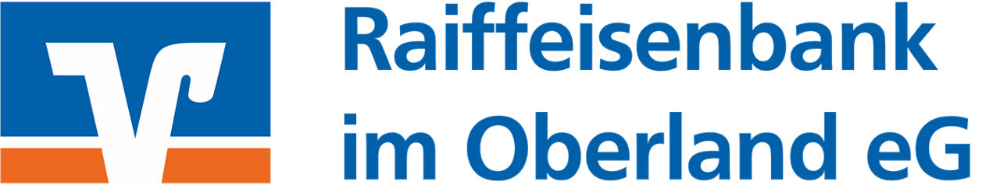
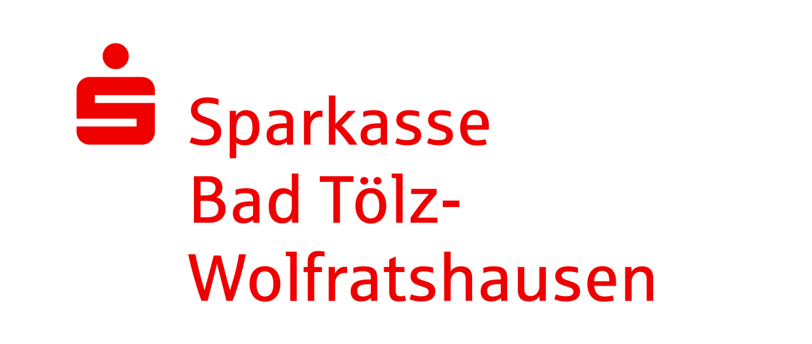
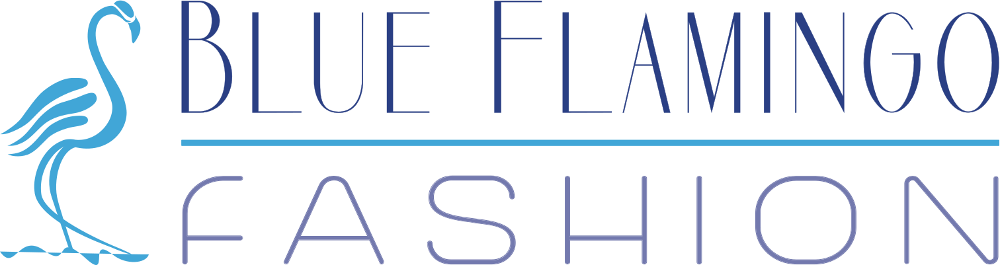
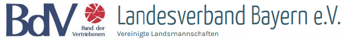
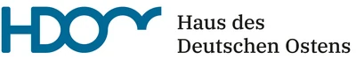
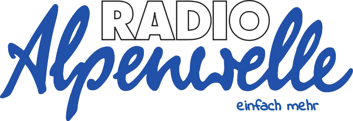
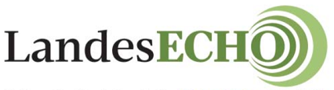
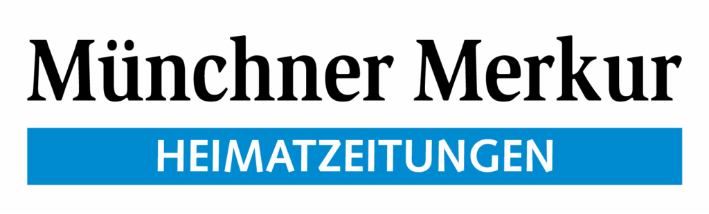

Raiffeisenbank im Oberland eG
Danke für die Unterstützung unseres Schulprojekts.
Sponsoren & Unterstützer
Hinter unserem Projekt stehen viele Menschen, die es mit möglich machen.
Wir danken allen, die uns finanziell unterstützen, ihr Wissen und ihre Zeit mit uns teilen, Begegnungen ermöglichen oder über unsere Arbeit berichten. Jeder Beitrag hilft uns, Geschichte zu verstehen und Erinnerungen weiterzutragen.
Unsere Unterstützer entdecken01 / Unterstützung aus der Region
Danke für das Vertrauen in unsere Idee und die Unterstützung auf dem Weg zu unserem Film.

Danke für die Unterstützung unseres Schulprojekts.

Danke für die Förderung unserer gemeinsamen Arbeit.

Danke für die Unterstützung aus Bad Tölz.
02 / Wissen & Begegnungen
Geschichte wird durch Menschen lebendig. Danke für den Austausch, die Einblicke und die Begleitung unserer Spurensuche.
Unser besonderer Dank
Ein besonderer Dank gilt der Sudetendeutschen Landsmannschaft. Wir danken ihr und allen Landsmannschaften, die uns begleitet und unterstützt haben – für das geteilte Wissen und die Bereitschaft, Erinnerungen an die nächste Generation weiterzugeben.
Mehr erfahrenFür die Unterstützung unserer Beschäftigung mit Geschichte und Erinnerung.

Für den Austausch und die Begegnungen rund um unser Projekt.

Für die Unterstützung unserer historischen Spurensuche.
03 / Presse & Öffentlichkeit
Danke an die Redaktionen, die über unser Projekt berichten und unsere Arbeit einem größeren Publikum vorstellen.

Für den Radiobeitrag und dafür, unserem Projekt eine Stimme zu geben.

Für den Bericht über unsere Exkursion und die Dreharbeiten im Egerland.

Für die Berichterstattung über unser Seminar und unsere Reise.
Und an alle, die mithelfen
Unser Dank gilt ebenso den Zeitzeuginnen und Zeitzeugen, unseren Gesprächspartnern und allen helfenden Händen im Hintergrund. Dass Sie Ihre Zeit, Ihre Erfahrungen und Ihre Geschichten mit uns teilen, bedeutet uns viel.
Das P-Seminar „Erlebnis Egerland“